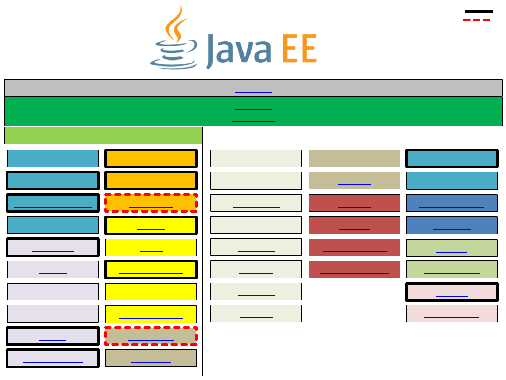
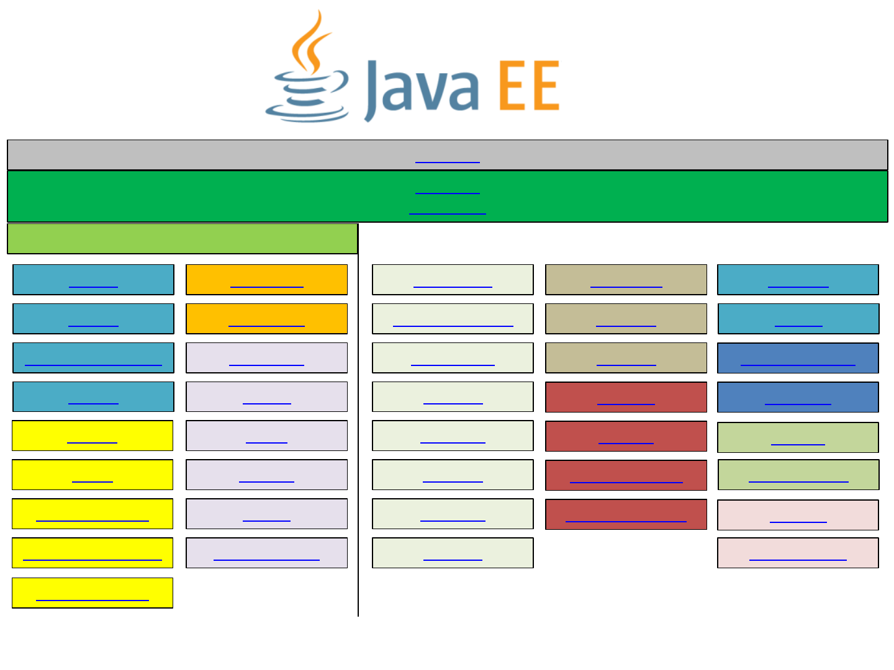

Java SE 8
Java EE 8
Full Profile
EJB 3.2
JSP 2.3
EL 3.0
Servlet 4.0
JDBC 4.2
JNDI 1.2
JMS 2.0
JTA 1.2
JTS 1.0
Mail 1.6
Activation 1.1
Connector 1.7
JAX-P 1.3
Web Services 1.4
JAX-WS 2.2
JAX-RPC 1.1
JAXB 2.2
SAAJ 1.3
JAX-R 1.0
JAX-RS 2.1
Management 1.1
Deployment 1.2
JMX 1.2
JACC 1.5
JASPIC 1.1
JAAS 1.0
JSTL 1.2
JSF 2.3
StAX 1.0
JPA 2.2
Bean Validation 2.0
Interceptors 1.2
DI 1.0
CDI 2.0
WebSocket 1.1
JSON-P 1.1
Concurrency 1.0
Batch 1.0
Managed Beans 1.0
Java EE Web Profile
Annotations 1.3
8
JSON-B 1.0
Security 1.0
Updated
New

Java SE 7
Java EE 7
Full Profile
EJB 3.2
JSP 2.3
EL 3.0
Servlet 3.1
JDBC 4.1
JNDI 1.2
JMS 2.0
JTA 1.2
JTS 1.0
Mail 1.5
Activation 1.1
Connector 1.7
JAX-P 1.3
Web Services 1.4
JAX-WS 2.2
JAX-RPC 1.1
JAXB 2.2
SAAJ 1.3
JAX-R 1.0
JAX-RS 2.0
Management 1.1
Deployment 1.2
JMX 1.2
JACC 1.5
JASPIC 1.1
JAAS 1.0
JSTL 1.2
JSF 2.2
StAX 1.0
JPA 2.1
Bean Validation 1.1
Interceptors 1.2
DI 1.0
CDI 1.1
WebSocket 1.0
JSON-P 1.0
Concurrency 1.0
Batch 1.0
Managed Beans 1.0
Java EE Web Profile
Annotations 1.2
7